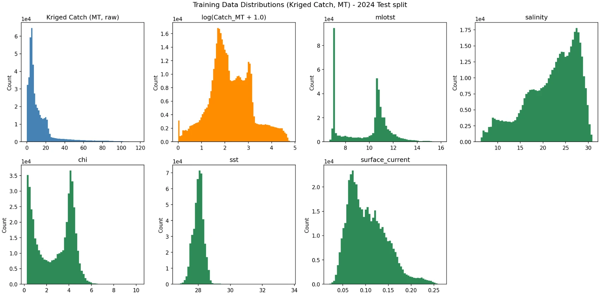
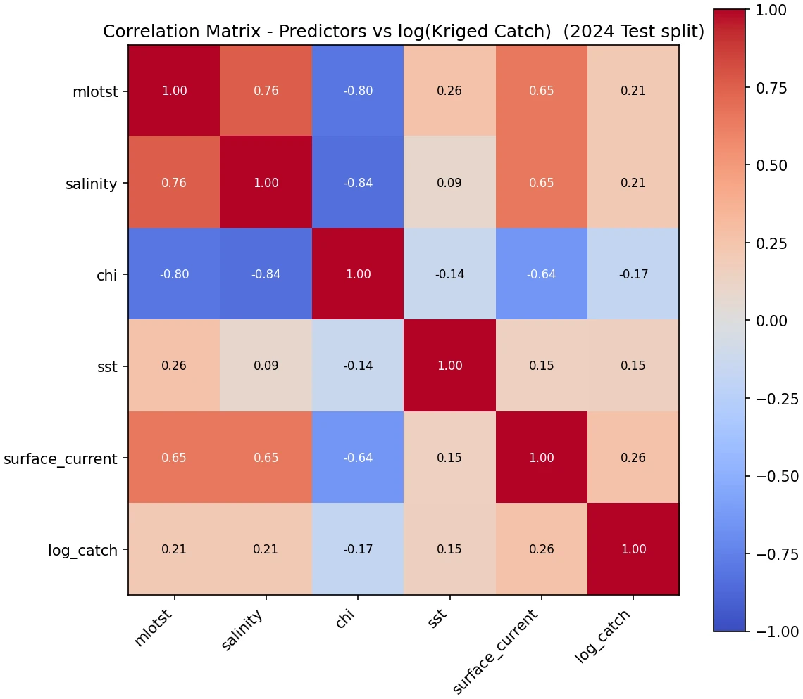
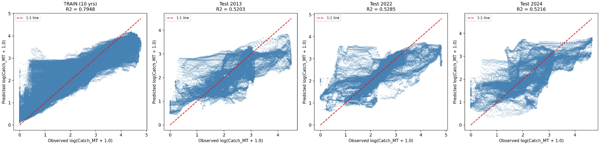
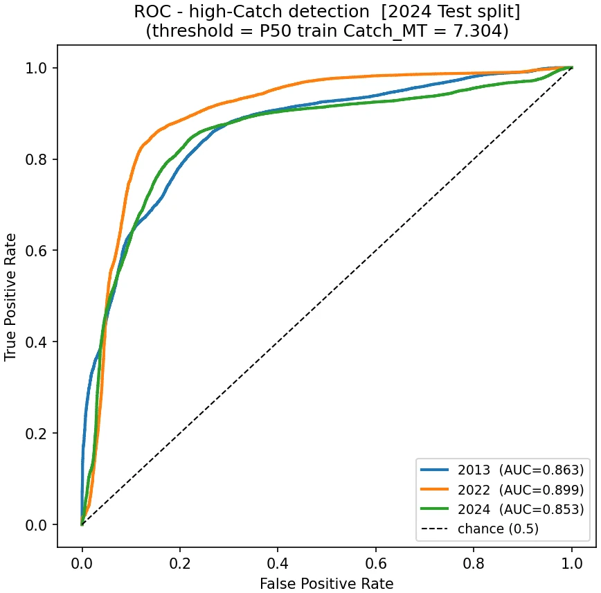
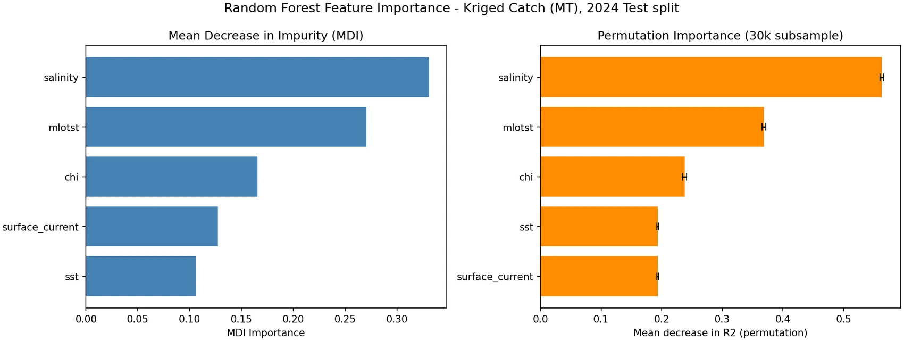
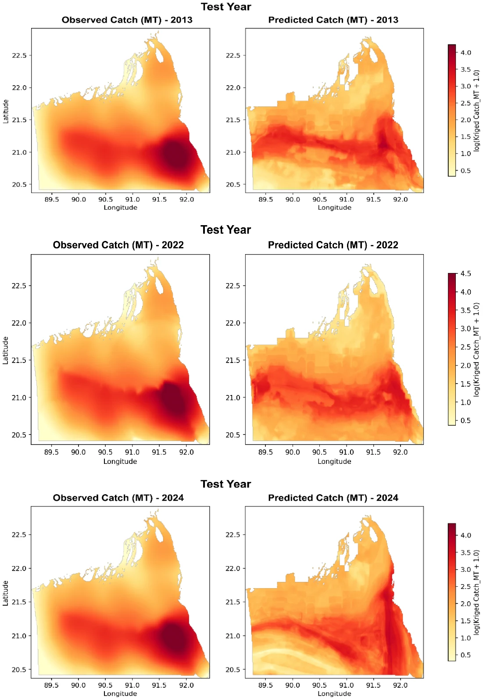

AI-Driven Earth Observation Framework for Predicting Marine Fish Yield and Supporting Sustainable Fisheries Management in Bangladesh
Can satellite oceanography alone tell you where fish are being caught, and how much? Thirteen years of sea-surface data, reconciled against real government catch statistics, says yes, with genuinely useful nuance about what it can and can't predict.
AuthorsRahman, S., Hossain, M. S., Hasan, M. M., & Kabir, R.
StatusDraft manuscript, unpublished · Project final report
MethodRandom Forest · GLORYS Reanalysis · Satellite EO · Kriging
Overview
Bangladesh's marine fisheries feed nearly 60% of the country's animal-protein intake and support over 10 million livelihoods, but conventional stock surveys are expensive, slow, and spatially sparse, exactly the wrong properties for tracking a resource that moves with the ocean. This project builds the first integrated Earth Observation and AI framework for the northern Bay of Bengal, fusing five satellite- and reanalysis-derived predictors, mixed-layer thickness, salinity, chlorophyll-a, sea surface temperature, and surface current, from GLORYS ocean reanalysis and merged ocean-colour missions, with thirteen years (2012–2024) of official Department of Fisheries catch statistics.
Catch tonnage was spatially distributed using kernel-density estimates of real fishing effort (vessel-trip records and AIS-derived fishing hours), then interpolated with ordinary kriging into continuous annual catch surfaces, each rescaled to sum exactly to the officially reported national total. A Random Forest model was trained on this pixel-wise dataset with three full years (2013, 2022, 2024) held out entirely for testing, never seen during training, to give an honest read on how well ocean conditions alone predict real, audited catch.

Fig. 1: Distribution of the response variable and five environmental predictors across thirteen years of training data. Catch tonnage is heavily right-skewed, the reason it was log-transformed before modelling.

Fig. 2: Pairwise correlations between predictors and log-catch. No single variable explains much on its own, the reason a Random Forest, which can combine several moderately informative signals, was the better modelling choice over simple regression.
Key Findings
The model explains 79% of catch variation on data it trained on (R² = 0.79) and holds a stable 52–53% on three fully unseen test years (2013, 2022, 2024), evidence it learned a genuine ocean-catch relationship rather than memorising a single year's quirks.
Discrimination between productive and unproductive water is strong and more reliable than exact tonnage: AUC for high- versus low-catch classification averaged 0.87 across the three test years (0.86 in 2013, 0.90 in 2022, 0.85 in 2024), all comfortably above the 0.85 threshold considered very good.
Salinity and mixed-layer thickness are the two dominant predictors by both importance measures tested, with surface current a clear third; chlorophyll and sea surface temperature, the variables most commonly used in fisheries remote sensing, mattered less here than expected.
Because catch was rebuilt from real government statistics rather than left as a relative index, the model's output is traceable tonnage, not just a productivity score, though aggregate predicted tonnage still runs 25–31% below observed totals in every test year, a known Random Forest tendency to compress extremes toward the mean.
The framework directly supports four SDGs: 14 (Life Below Water, via evidence-based MPA zoning), 13 (Climate Action, via El Niño-type scenario forecasting), 2 (Zero Hunger, via supply-side food security forecasting), and 1 (No Poverty, via reduced search costs for small-scale fishers).

Fig. 3: Predicted vs. observed catch. Training fit is strong; performance on the three genuinely unseen years is consistent within a tight band (R² 0.52–0.53), the detail behind finding 1 above.

Fig. 4: ROC curves for high- vs. low-catch classification (median-threshold split) across all three test years. Detail behind finding 2 above.

Fig. 5: Predictor importance by two independent measures (impurity-based and permutation), in close agreement on the ranking. Detail behind finding 3 above.

Fig. 6: Observed vs. predicted spatial catch distribution for all three test years. The model consistently locates the same southeastern hotspot the kriged observations show, even in years it never trained on.
Status
This is a completed project final report, developed under an Earth Observation for SDGs initiative, and is being adapted into a peer-reviewed manuscript. The modelling pipeline is designed as a reusable operational tool: it can be re-run annually as new fisheries and satellite data arrive, and the same predictors could support species distribution modelling, bycatch risk assessment, and harmful algal bloom early warning as future extensions.